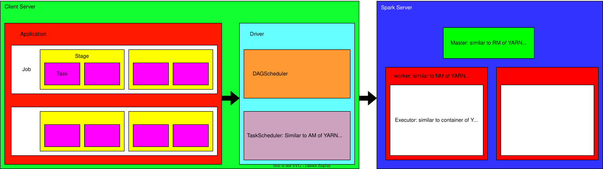
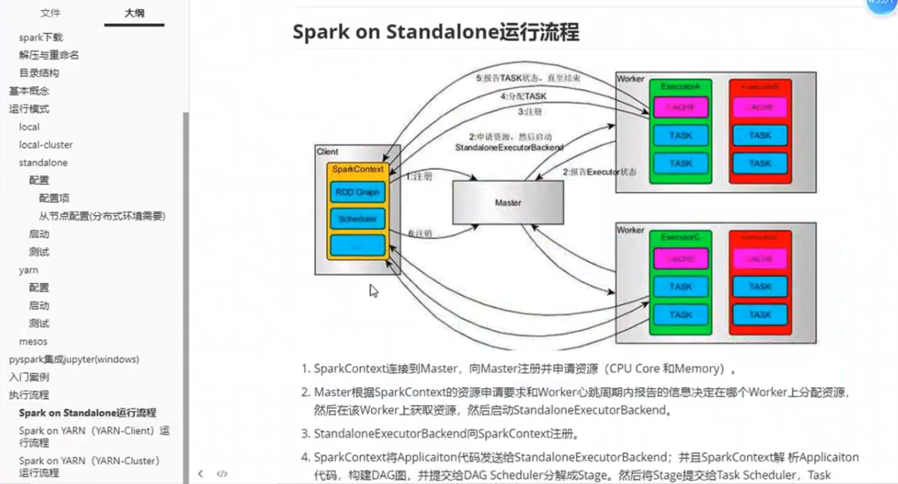
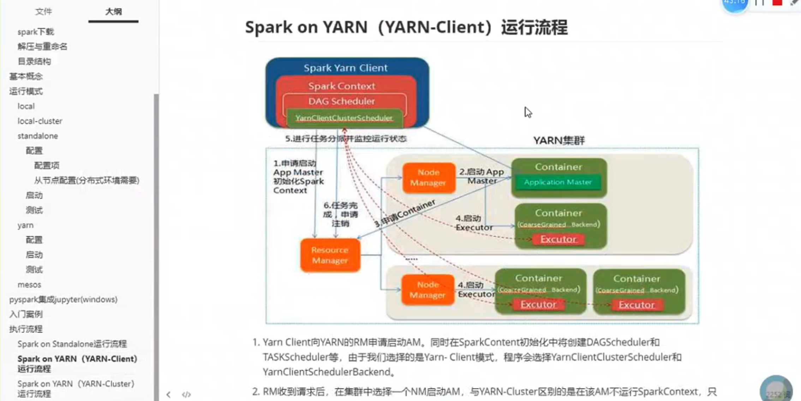
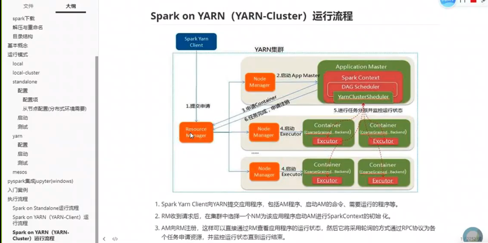

Basics #
- application > job > state > task
- cluser manager: scheduling spark applications. e.g. yarn/mesos
- masater && worker
- master: RM(ResourceManager in YARN)
- worker: NM(NodeManager in YARN)
- executor: Container in YARN
- masater && worker
- driver:
- running in spark, including DAGScheduler && TaskScheduler
- combine operations and form DAG(directed acyclic graph)
- break down job into stages
- similar to ApplicationMaster(AM) in YARN, responsible for applying resources and scheduling
- DAGScheduler:
- split job into stages
- TaskScheduler:
- similar to AM, responsible for applying resources and scheduling
- YARN: ResourceManager(RM), NodeManager(NM), ApplicationMaster(AM), Container
- YARN: only NM can start AM and Container
- Standalone: master, worder, driver, executor
- Standalone: only worker can start driver and executor




Operating Mode #
- local/local-cluster/standalone/yarn/mesos
local #
-
driver + executor, running in one process
-
pysparkuselocal[*]by default- local: one executor
- local[K]: K executors, K threads
- local[*]: the number of cpu executors
-
change mode with
pyspark --master -
with
jpsto check procsses
bin/pyspark --master local
# or
bin/spark-submit examples/src/main/python/pi.py 10local-cluster #
- driver + master + worker, running in one process
- each worker has multiple executors, each executor start one new process
pyspark --master local-cluster[x, y, z]- x: the number of executors
- y, z: each executor has y cores(actually threads) and z memory size(MB)
bin/pyspark --master "local-cluster[2, 2, 1024]" # commont out pyspark setup in .zshrc
# or
bin/spark-submit --master "local-cluster[2, 2, 1024]" examples/src/main/python/pi.py 10standalone #
- written by spark, similar to RM of YARN
- driver/master/worker/executor all have their own process
- Setup:
spark-env.sh.templatespark-default.conf.template- Note: SparkSubmitArguments reads in order:
- [pyspark-options] or [spark-submit-options], [conf/spark-default.conf], [conf/spark-env.sh]
- Setup workers:
- modify
conf/slavesfile - sync the setup of work1 and work2
scp -r /opt/module/spark-3.5.0-bin-hadoop3/ worker1:/opt/module/spark-3.5.0-bin-hadoop3 scp -r /opt/module/spark-3.5.0-bin-hadoop3/ worker2:/opt/module/spark-3.5.0-bin-hadoop3 - modify
- Start:
- Start spark
sbin/start-all.sh- Start process
[start-all.sh] -> load [spark-config.sh] -> run [start-master.sh] and [start-slaves.sh] -> load [spark-config.sh] and [spark-env.sh] -> run [spark-daemon.sh] -> run [spark-class.sh] or ([spark-submit.sh] -> [spark-class.sh]) - Test:
- On each machine, use
jpsto check process of master and slaves - Entry master’s WEBUI: 8080
- run
pysparkbin/pyspark --master spark://localhost:7077 - run
spark-submitmust assign
--masterfor standalone, otherwise it will be localbin/spark-submit --master spark://localhost:7077 examples/src/main/python/pi.py 10
- On each machine, use
- Kill:
jpskill 00000
yarn and mesos(similar to yarn) #
start
yarnandhdfsin hadoop, then spark-submit with yarn, we don’t need to start spark
- yarn-client and yarn-cluster
- Setup:
spark-env.sh.templaterename tospark-env.sh
HADOOP_CONF_DIR=/...../hadoop-3.3.6/etc/hadoop or YARN_CONF_DIR=/home/yixianwang/hadoop/etc/hadoop - Start:
- in
hadoopfolder, run the following
sbin/hadoop-daemon.sh start namenode sbin/hadoop-daemon.sh start datenode sbin/yarn-daemon.sh start resourcemanager sbin/yarn-daemon.sh start nodemanager # or directly sbin/start-all.sh - in
- Test:
netstat -an|grep LISTEN- On each machine, use
jpsto check process of RM and NM - Entry master’s WEBUI: 8088
- running: yarn-client
bin/spark-submit --master yarn examples/src/main/python/pi.py 10Note:
--deploy-modedefault is client, start driver from client, we can browse logs from client- running: yarn-cluster
bin/spark-submit --master yarn --deploy-mode cluster examples/src/main/python/pi.py 10Note: if
--deploy-modeis cluster, start driver from master of cluster, we have to use history server to browse logs - On each machine, use
SparkSession && sparkContext #
- spark sql, start with SparkSession
- spark core, start with sparkContext
For Test in Local: open Jupyter notbook with pyspark built-in spark and sc #
# .zshrc
export PYSPARK_DRIVER_PYTHON=jupyter-lab
export PYSPARK_DRIVER_PYTHON_OPTS=/opt/module/spark-3.5.0-bin-hadoop3/tutuExamples #
# after setting up, pyspark has built-in spark and sc, and can open jupyter-lab
# for local test with jupyter
pyspark# file and counts are RDDs
file = sc.textFile("/opt/module/spark-3.5.0-bin-hadoop3/data/core/data/wordcount.txt")
counts = file.flatMap(lambda line : line.split(' '))\
.map(lambda word : (word, 1))\
.reduceByKey(lambda a, b : a + b)
counts.collect()
# collect before saving
file.collect()
file.saveAsTextFile("/opt/module/spark-3.5.0-bin-hadoop3/data/core/data/result")read from HDFS #
- Start HDFS:
sbin/hadoop-daemon.sh start namenode
sbin/hadoop-daemon.sh start datanode- Upload file
# create 1 -level folder
bin/hdfs dfs -mkdir /spark
# create 2 -level folder
bin/hdfs dfs -mkdir -p /spark/historybin/hdfs dfs -rm -r /folder_need_to_removehistory server setup #
-
Setup
- setup
spark-defaults.conf
# spark-defaults.conf spark.eventLog.enabled true spark.eventLog.compress true spark.eventLog.dir hdfs://localhost:9000/spark/history- create history foler in hdfs
bin/hdfs dfs -mkdir -p /spark/history- setup
spark-env.sh
SPARK_HISTORY_OPTS="-Dspark.history.ui.port=18080 -Dspark.history.retainedApplications=3 -Dspark.history.fs.logDirectory=hdfs://localhost:9000/spark/history -Dspark.history.fs.cleaner.interval=1d -Dspark.history.fs.cleaner.maxAge=2d" - setup
-
Run
- start hdfs
- mkdir hdfs folder
- start historyserver
start-history-server.sh
tail -10f filenamerealtime checking